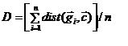
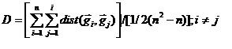

The cluster selection algorithms are specific to scripting in MeV. Automatic Cluster Selection allows the user to provide criteria for evaluating cluster results where clusters have no intrinsic identity such as “significant genes”. One scenario is the result from K-Means Clustering (KMC) where K=10. In this case, 10 clusters will be produced and the cluster selection algorithms could be used to extract clusters based supplied criteria.
In Diversity Ranking Cluster Selection two possibilities exist for determination of cluster diversity:(1)(mean gene to centroid distance)
/n;c is the cluster centroid, gi is the ith expression vector of n vectors.
(2)(mean gene to centroid distance)

The output is a list ranking the clusters by diversity with cluster population listed. Clusters that pass the size criteria and are least diverse are selected and are indicated in the list by bold type.
Diversity Ranking cluster selection is an algorithm used to rank a set of clusters based on diversity and then select candidate clusters meeting supplied criteria. This process will tend to find clusters that meet a minimum size and have relatively lower variability between the expression vectors contained in the cluster. This process will find the least variable clusters but there is no means to know if the clusters found will have interesting expression changes over the set of observations.
Note: See Centroid Variability or Entropy Ranking cluster selection for methods that try to select clusters that have maximal centroid variance over the observations. In some cases it might be advisable to try several selection methods on an input set of clusters.
Parameters
Desired Number of Clusters
This parameter indicates the number of clusters that should be selected from the input set. If during execution it turns out that the number of input clusters is smaller than the number of clusters desired, then all input clusters are returned as the result.
Minimum Cluster Population (# of elements)
The minimum cluster size describes the minimum number of genes or experiments that should be in the cluster. In some cases clusters may have low variability but are only composed of a couple of elements.
Rank Clusters on Centroid Based Diversity
Centroid based diversity is the mean distance between a each element in the cluster and the cluster's centroid (mean expression pattern for the cluster). (Distance metric is determined by the current global metric defined in the 'Distance' menu. Euclidean is the default metric.)
Rank Clusters on Intra-gene Based Diversity
Intra-gene based diversity is the mean distance between each element in the cluster to every other gene in the cluster. (Distance metric is determined by the current global metric defined in the 'Distance' menu. Euclidean is the default metric.)
{kind=link}
{kind=link}